МДК 02.02 Инструментальные средства разработки
Table of Contents
1. Лабораторная работа №2-4
Тема: Разработка структуры проекта. Диаграмма модулей. Перечень артефактов и протоколов. Настройка работы системы контроля версий. Разработка проекта на основании шаблона.
Цель: создание модульной структуры проекта в виде диаграммы, разработка перечня артефактов (основных файлов) и протоколов, настройка Git
Выполнение работы:
1. Требуется создать веб-приложение (сайт) на основе имеющегося шаблона. Выбрать Файл > Создать > Проект (Create a new project). Далее в открывшемся окне выбрать Bottle Web Project и нажать Next:
Задать название проекта (в наименование должна быть включена фамилия студента) > Create.
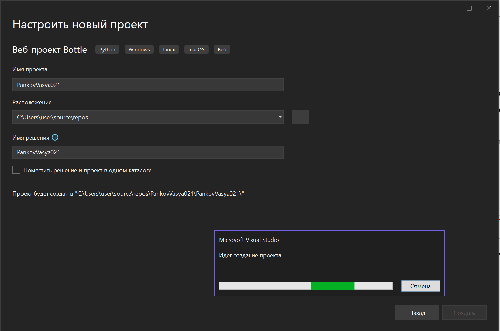
Figure 1: Создание решения
2. По умолчанию в редакторе кода откроется файл app.py. Для корректной интерпретации содержимого файла requirements.txt будет предложено создать виртуальное окружение.
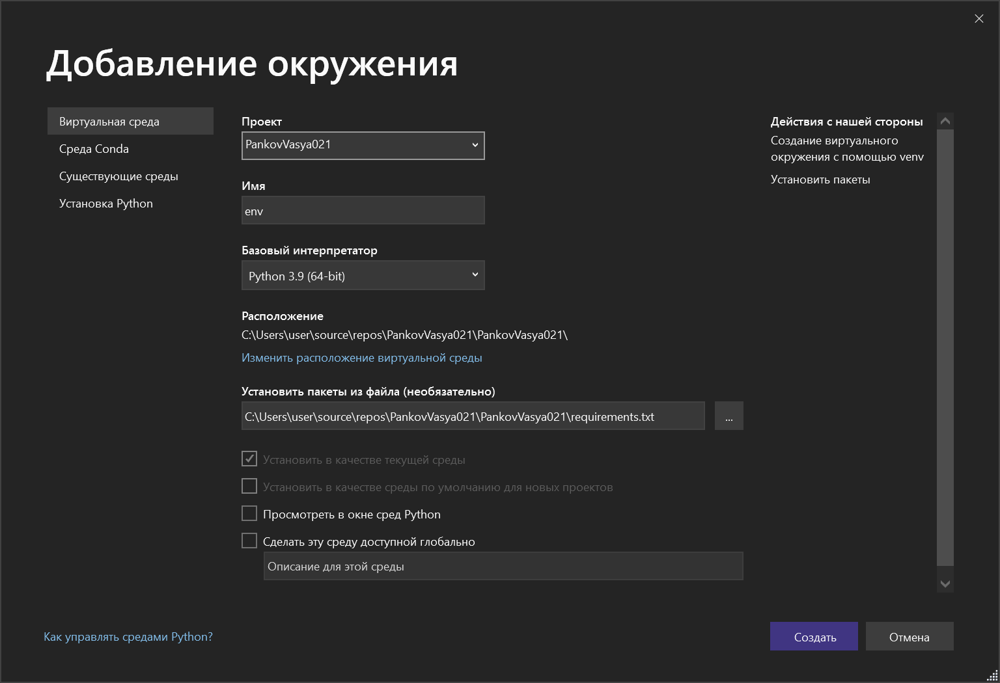
Figure 2: Создание виртуальной среды
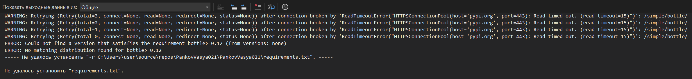
Figure 3: Неудачная разработка среды
3. Ознакомиться со структурой проекта, открыв Обозреватель решений (Solution Explorer):
В папке static содержатся стилевые css-файлы для оформления внешнего вида веб-страниц, шрифтовые наборы и js-скрипты.
Выбрав для просмотра файлы из папки views, можно убедиться, что они представляют собой макеты веб-страниц: главной (index.tpl), о нас (about.tpl), контакты (contact.tpl), а файл layout.tpl – не что иное, как шаблон обёртки с панелью навигации, содержащей четыре гиперссылки: Application name, Home, About, Contact в «шапке» сайта и небольшим «подвалом».
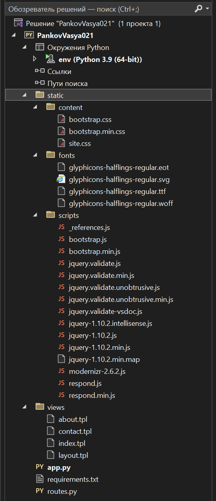
Figure 4: Структура проекта
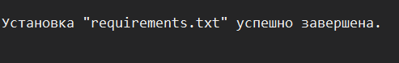
Figure 5: Удачная установка
4. Выполнить запуск проекта
№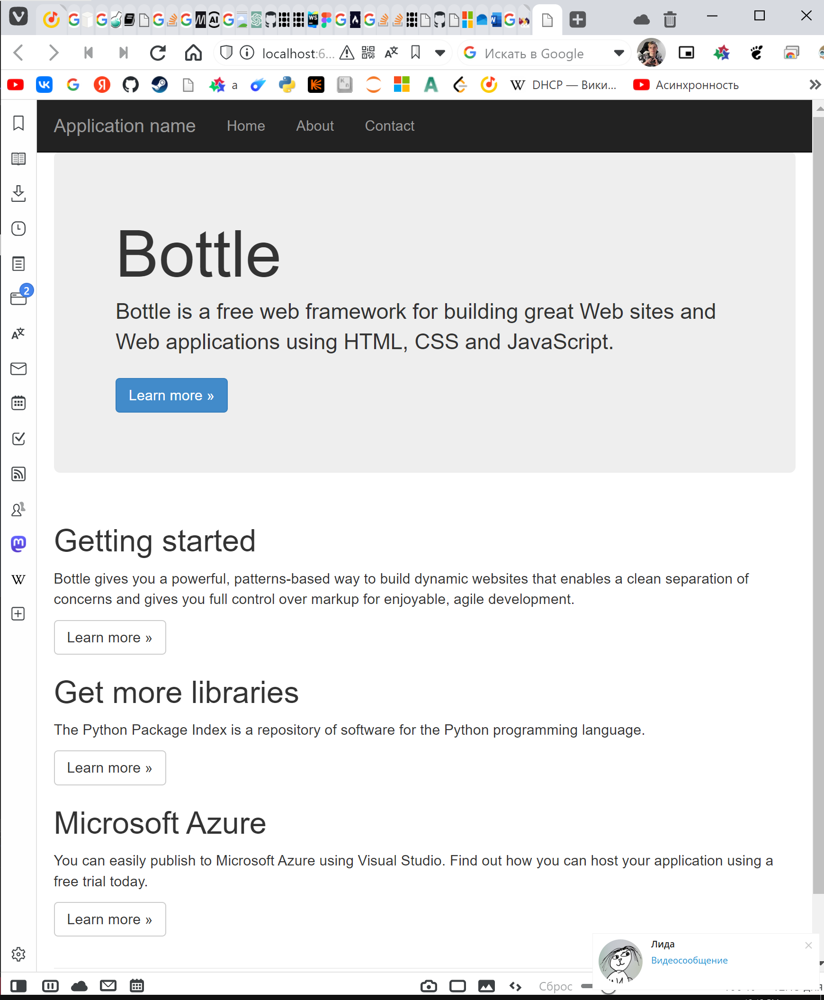
5. Например, вместо текста заголовка «Bottle» на главной (домашней) странице требуется разместить картинку. Для этого сначала в структуре каталога static создаётся папка images, в которую копируется файл изображения logonav.png. Затем в коде index.tpl удалить строку <h1> Bottle </h1>, добавить <img src="static\images\logonav.png"> (файл изображения можно скачать с сайта http://bottlepy.org/docs/dev/index.html) и пустой абзац <p> </p>
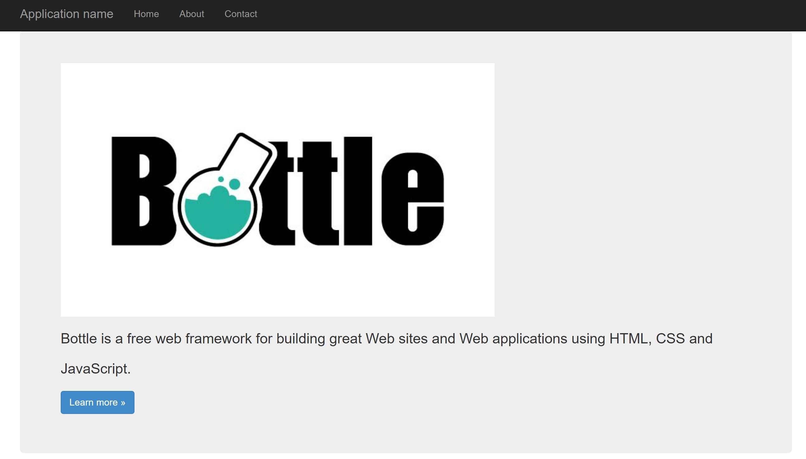
Figure 6: Отображение сайта
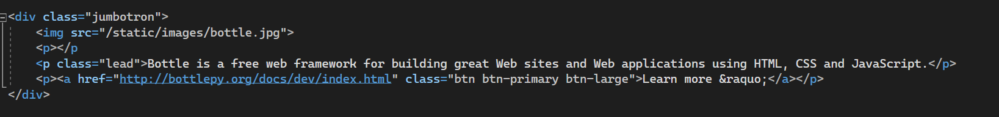
Figure 7: Изменения кода
6. Требуется создать веб-приложение (тематический сайт) на основе шаблона фреймворка Bottle. Придерживаться следующих этапов:
Выбрать тематику приложения, согласовать с преподавателем (темы не повторяются!).
ReportViwer - сайт для просмотра отчётов
Подобрать текстовые и графические (иллюстрации, иконки, карты) материалы для сайта.
Был разработан дизайн в Figma:
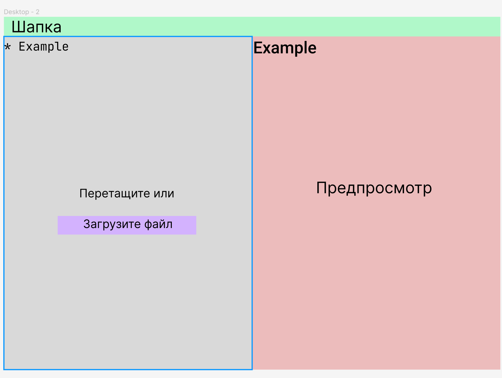
Figure 8: Warframe
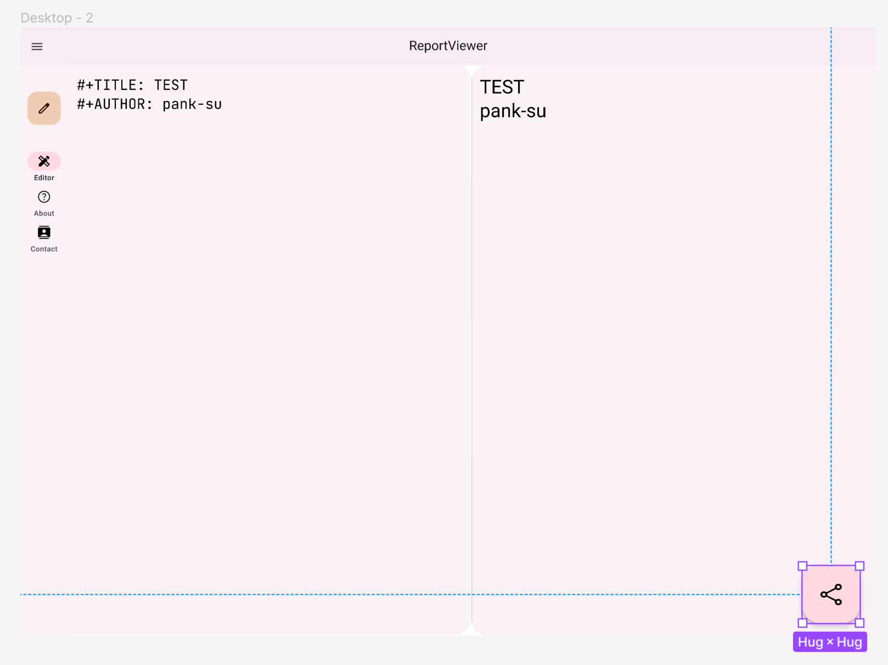
Figure 9: Дизайн в Figma
Построить UML-диаграмму компонентов приложения (css-файлы считать одним укрупнённым структурным компонентом, аналогично js-скрипты, их подключение осуществляется в файле layout.tpl).
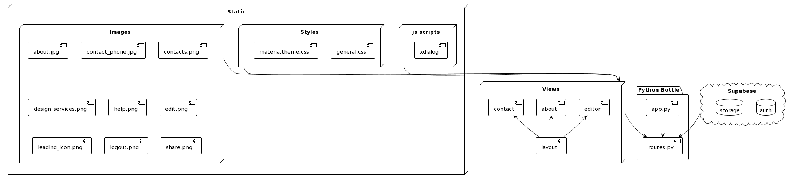
Figure 10: UML-диаграммы
Настроить Git. Хранение проекта осуществлять в репозитории на Github одного из участников, остальные клонируют проект в свой локальный репозиторий. Распределить задачи редактирования файлов шаблонов между членами команды. Изменить содержимое этих файлов согласно выбранной тематике (ссылки на кнопках поставить на нужные страницы похожих по тематике сайтов).
Репозитоий был создан мной на GitHub
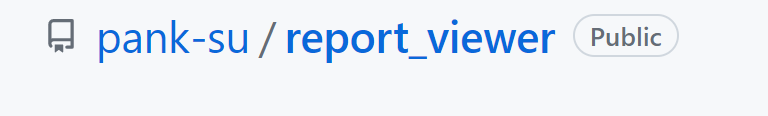
Вести контроль версий. Синхронизировать все локальные изменения с удалённым репозиторием на Github.
В итоге были получены такие изменения от всех пользователей:
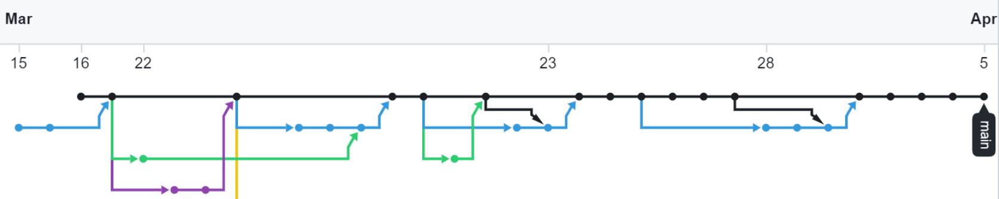
Figure 11: Изменения от всех пользователей
Моя часть работы состояла, в создание основной части приложения, то есть редактора текстовых документов:
Вид без авторизации:
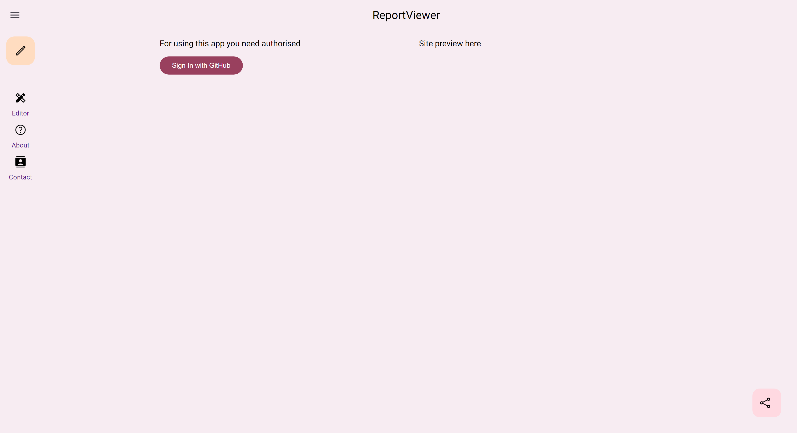
Figure 12: Вид, без авторизации
Вид, после авторизации, с выбранным файлом
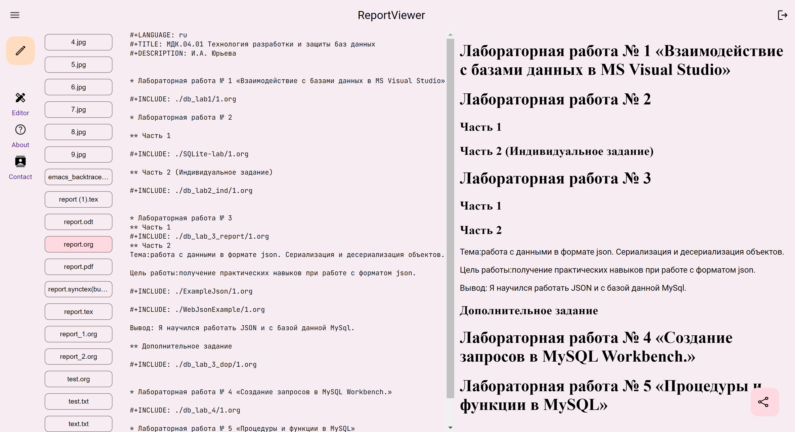
Figure 13: Просмотр текстового файла
Просмотр картинки
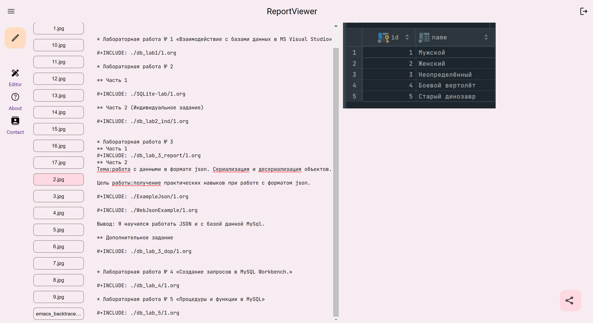
Figure 14: Просмотр картинок
Заполнить файл README.md. Примерный вариант описания можно найти в шаблоне https://gist.github.com/PurpleBooth/109311bb0361f32d87a2 или по ссылке https://github.com/Sinclear/default_readme
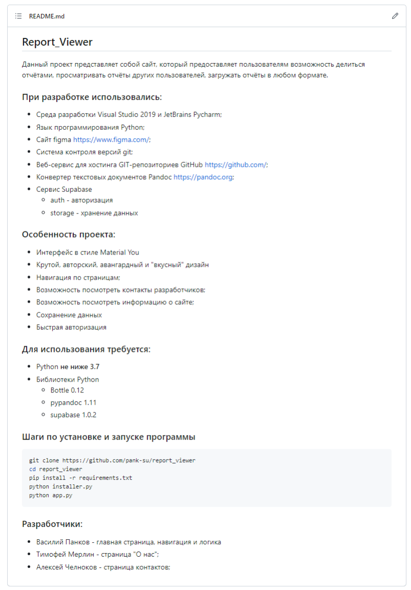
Figure 15: README файл
Контрольные вопросы:
Каково основное назначение UML-диаграмм и их роль в разработке приложений?
Основное назначение UML-диаграмм и их роль в разработке приложений заключается в хорошем проектировании приложения перед его непосредственным кодированием.
Можно ли считать артефактами веб-страницы сайта? Обоснуйте ответ
Да, веб-страницы сайта можно считать артефактами, так как это информационные элементы, которые тем или иным способом используются при работе программной системы и входят в ее состав.
Предпочтительнее ли протокол HTTPS протоколу HTTP? Почему (да / нет)?
Да, так как протокол HTTPS является расширением протокола HTTP, добавляющий поддержку шифрования в целях повышения безопасности. Также протокол HTTPS является стандартом даже для не самых крупных сайтов сейчас.
Что значит код ответа сервера «200»? Какие ещё группы и коды ответов вы знаете (привести по 1-2 примера из каждой группы)?
Коды сгруппированы в 5 классов:
Информационные 100 – 199
101 Switching Protocol "В обработке". Этот код указывает, что сервер получил запрос и обрабатывает его, но обработка ещё не завершена.
100 Continue "Продолжить". Этот промежуточный ответ указывает, что запрос успешно принят и клиент может продолжать присылать запросы либо проигнорировать этот ответ, если запрос был завершён.
Успешные 200 – 299
200 OK "Успешно". Запрос успешно обработан. Что значит "успешно", зависит от метода HTTP, который был запрошен.
202 Accepted "Принято". Запрос принят, но ещё не обработан. Не поддерживаемо, т.е., нет способа с помощью HTTP отправить асинхронный ответ позже, который будет показывать итог обработки запроса. Это предназначено для случаев, когда запрос обрабатывается другим процессом или сервером, либо для пакетной обработки.
Перенаправления 300 – 399
301 Moved Permanently "Перемещён на постоянной основе". Этот код ответа значит, что URI запрашиваемого ресурса был изменён. Возможно, новый URI будет предоставлен в ответе.
304 Not Modified "Не модифицировано". Используется для кеширования. Это код ответа значит, что запрошенный ресурс не был изменён. Таким образом, клиент может продолжать использовать кешированную версию ответа.
Клиентские ошибки 400 – 499
400 Bad Request "Плохой запрос". Этот ответ означает, что сервер не понимает запрос из-за неверного синтаксиса.
401 "Неавторизованно". Для получения запрашиваемого ответа нужна аутентификация. Статус похож на статус 403, но, в этом случае, аутентификация возможна.
Серверные ошибки 500 – 599
500 Internal Server Error "Внутренняя ошибка сервера". Сервер столкнулся с ситуацией, которую он не знает, как обработать.
504 Gateway Timeout Этот ответ об ошибке предоставляется, когда сервер действует как шлюз и не может получить ответ вовремя.
Какую систему защиты и сертификации данных использует Git по умолчанию?
По умолчанию Git использует для защиты и сертификации данных систему SSH.
Что значит «клонировать» репозиторий в терминах Git?
«Клонировать» репозиторий в терминах Git означает полный перенос удалённого репозитория на локальную машину с помощью команды git clone.